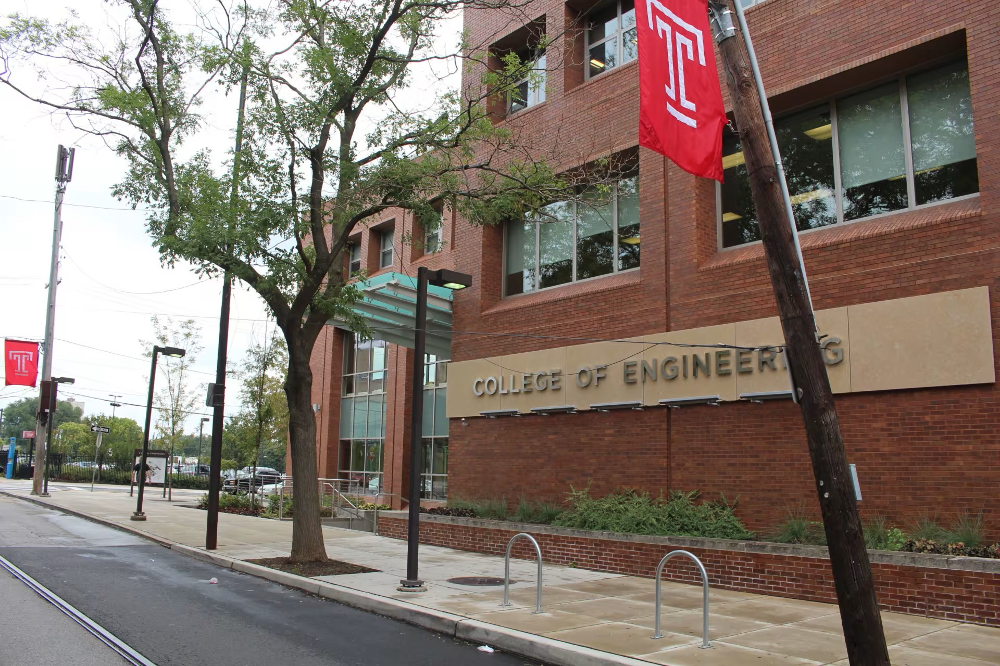
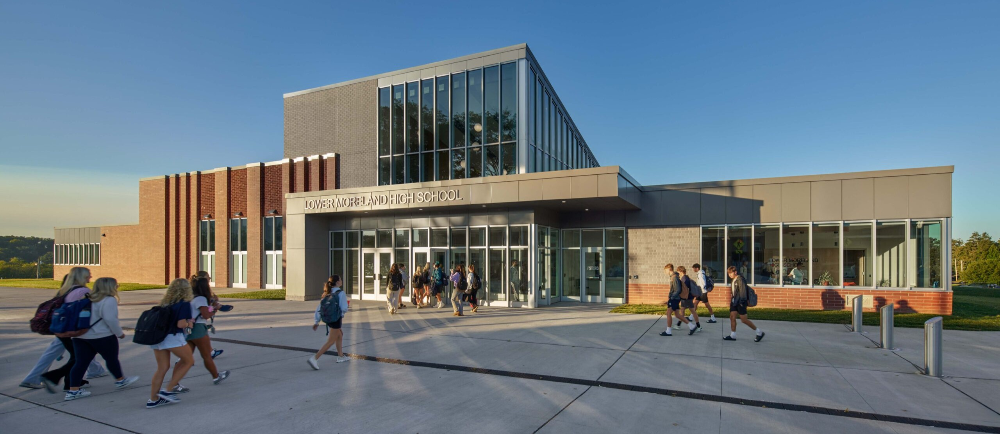

I'm Richard Lin from Huntingdon Valley, Pennsylvania, an undergraduate at Temple University.
I'm passionate about software-hardware integration and enjoy developing programs that interact directly with circuits, sensors, and devices.
I'm eager to pursue internships and opportunities that allow me to apply these skills to innovative projects.
Education
Temple University

Bachelor of Science: Electrical & Computer Engineering
Minor: Computer Science
Certificate: Fundamentals of Physics
GPA: 4.00 / 4.00
STEPS Program Scholar (NSF-funded Sustainable Temple Energy & Power Scholars Program)
Dean's List: Fall 2024, Spring 2025
Expected Graduation: May 2028
Lower Moreland High School
Old High School

New High School
Graduated: June 2024 | GPA: 4.00 / 4.00 | AP Scholar with Honor
Awards & Honor: The Extra Mile Award, The Bernard Mazaud Award, Student of the Month, Most Dedicated Athlete (Outdoor Track)
Activities: Cross Country; Indoor & Outdoor Track and Field; Environmental Club; Coding Club; Asian Culture Club; Chess Club
Leadership & Involvement
Temple University - Institute of Electrical and Electronics Engineers (IEEE) Student Branch
Outreach Lead, Sep 2024 - Present
Led the planning and execution of key IEEE events, including Breaboard Workshop, Soldering Workshop, Lockheed Martin Info Session, and Resume Workshop, boosting student engagement and IEEE membership
Earned 3rd place out of 20 teams at the 2025 IEEE R1 & R2 Student Conference Sumo Bot Competition (Stony Brook University)
Programmed and optimized a Pololu Zumo autonomous sumo robot in C++ (Arduino), collaborating on sensor calibration and hardware integration
Temple University - Robotics
Member, Sep 2024 - Present
Assisted in programming robot subsystem using C++ and Python to interpret sensor inputs
Collaborated with team members to support electrical and circuit tasks, including motor controller testing
Additional Clubs: Society of Asian Scientists and Engineers (SASE), Badminton Club
Experience
Temple University
Sustainable Temple Energy Power Scholar (STEPS) Ambassador
March 2025 - Present
Engineered and programed Micro:bit and Drone:bit platforms in Python, developing flight-path algorithms, joystick controls, and obstacle-navigation features
Debugging and rebuilding hardware (including soldering) to ensure reliable demonstration performance
Led STEM workshops, high-school tours and open-house events, teaching Python coding, basic circuit, and wind turbine blade design experiment
Mentored STEPS underclassmen, providing academic coaching, study strategies, and guidance on campus resources
Undergraduate Teaching Assistant
Aug 2025 - Present
ENGR 1011 - Intro to Engineering and Engineering Technology
Assist faculty with course instruction, hands-on activities in foundational engineering topics
Tested components and created instructional slides for connecting hardware like fans, LEDs, and Temperature sensors
Guided students through group projects, assignments involving Excel, Micro:bit, and Python, fostering collaboration and applied learning
Track and check off students' in-class assignments, ensuring timely and accurate completion
Temple University - Department of Electrical and Computer Engineering
Undergraduate Research Assistant
Oct 2025 - Present
Advisor: Dr. Bai Li
Maintained the research lab's website to showcase projects, research updates, and publications
Assisted in developing a mobile elderly-care assistive robot for older adults living independently, supporting features for medication reminders, scheduling, and conversational assistance
Integrated a large language model (LLM) for answering user questions and voice-based interaction
Supported machine-learning posture-detection models using camera and sensor data to evaluate whether users perform excercise correctly
Tested the robot's mobility features, including user-following and physical demonstration of exercise
Personal Projects
Would be added later
Achievements & Awards
STEPS Scholarship
The STEPS scholarship at Temple University, funded by the NSF, is awarded to outstanding students selected by the Electrical & Computer Engineering faculty for exceptional academic achievement in high school.
The program provides peer mentorship, a supportive community of like-minded scholars, and opportunities to engage in sustainability-focused research and professional development.
Hobbies
In my free time, I enjoy running, playing badminton, coding, and exploring new technologies.
Running and playing badminton helps me stay fit, clear my mind, and socialize with friends.
Coding allows me to create and innovate, and I love learning about the latest advancements in technology.